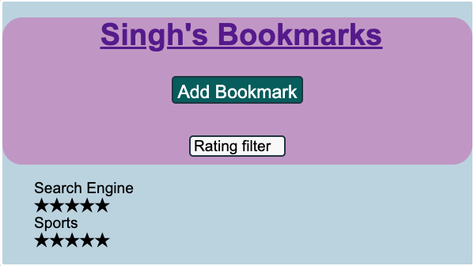

About
I'm Preet Singh, an aspiring fullstack web developer in Houston, TX.
I create web applications with JavaScript, HTML, and CSS. My professional background is in teaching, with experience in biomaterials research and development.
I have spent the past six months learning FullStack languages: HTML, CSS, JavaScript, React, Node, and PostgreSQL
with the ultimate goal of creating dynamic and efficient tools.
I am inspired by the impactfulness that code can have on society in providing innovative solutions to complex problems, and I aim to add to that impact in the future.
Resume
{kind=link}
Project Section
Quiz App

Project Description
A quiz app that test you on your knowledge of History.
Theres a start screen, question pages, score board,
and results page with animated feedback and quiz form
background.
Technologies Used
Bookmark App
Project Description
A responsive bookmark app for all your important pages
Theres functionality to create and update bookmarks
as well as see an expanded view
Technologies Used
Seasons App

Project Description
A React app that detects a users location
And will update the season based on their location
Technologies Used
Contact